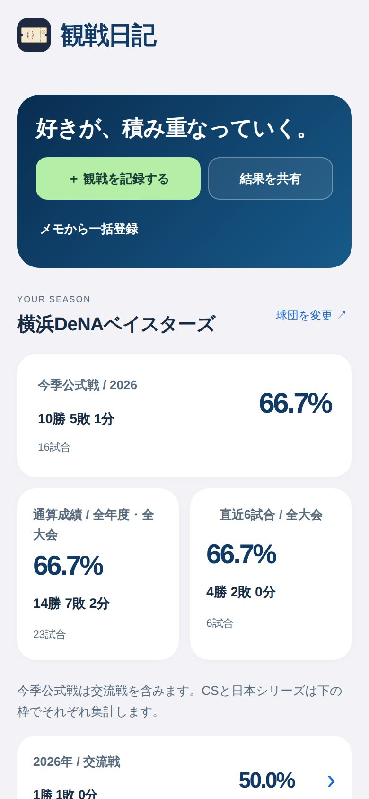
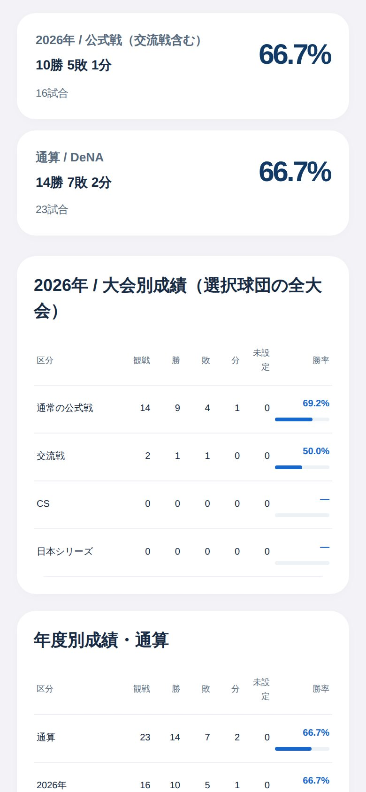
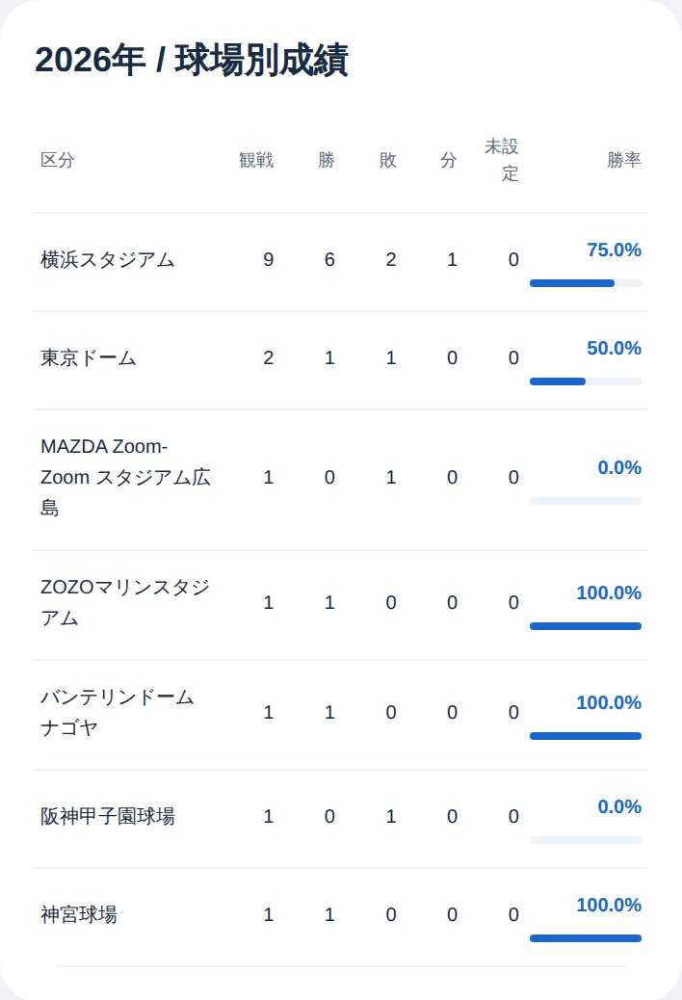
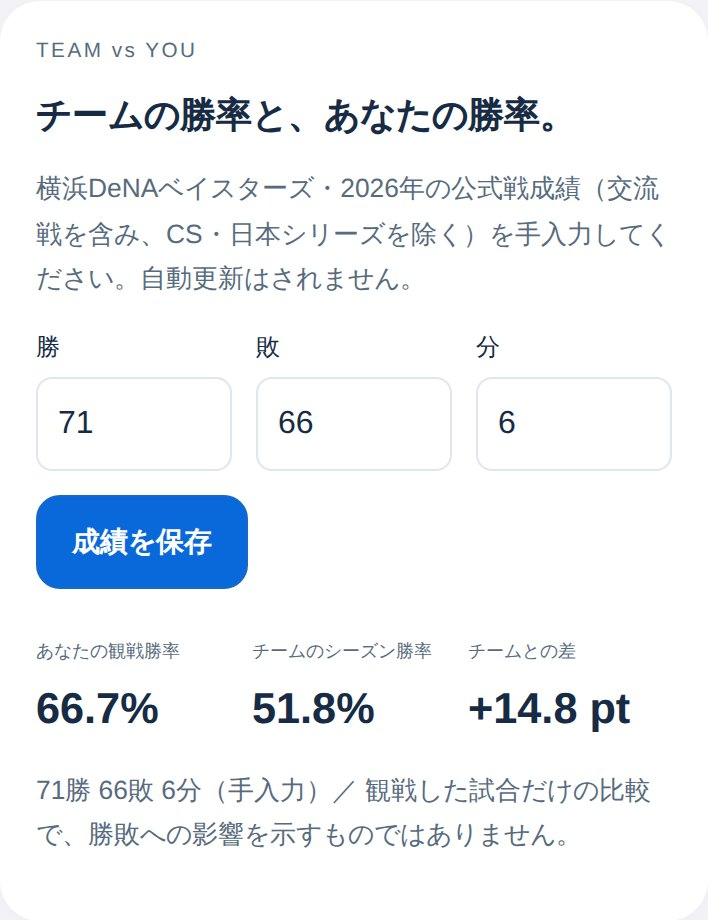
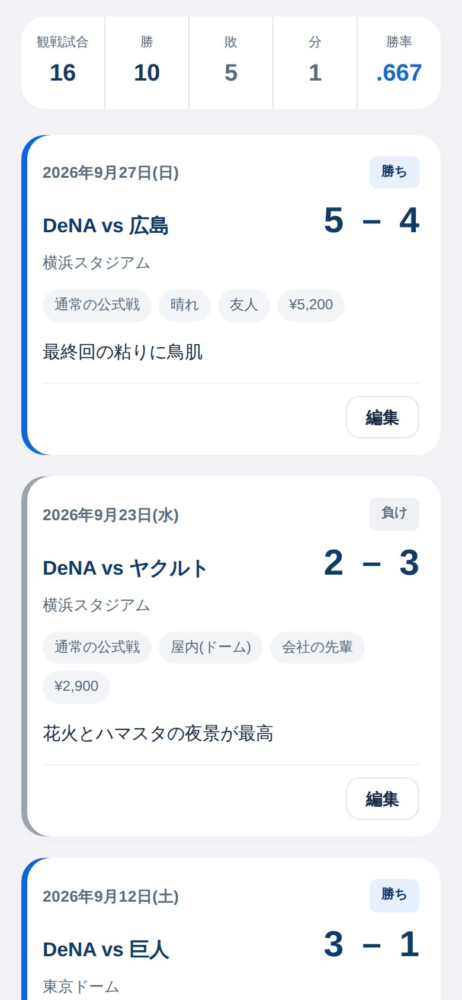

観戦成績
記録するだけで、
あなたの成績表ができあがる。
試合日・対戦相手・球場・スコアを入れて保存するだけ。勝ち負けは自動で判定され、ホーム画面にあなたの観戦成績がまとまります。
- 今季の公式戦、通算、直近6試合の成績
- 年度別・月別の観戦成績
- 交流戦・クライマックスシリーズ・日本シリーズは分けて集計
観戦日記は、球場で見た試合を記録するだけで、あなただけの観戦成績を出してくれるプロ野球ファンのための日記アプリです。今季の勝率も、球場ごとの勝率も、チームの勝率との比べっこも、ひと目でわかります。

ファンなら、気になる
観戦成績
試合日・対戦相手・球場・スコアを入れて保存するだけ。勝ち負けは自動で判定され、ホーム画面にあなたの観戦成績がまとまります。

球場別の勝率
記録した試合を球場ごとに集計。ドームでも屋外でも、地方球場でも。よく行く球場の勝率がひと目でわかるので、次にどこへ観に行くか考えるのも楽しくなります。

TEAM vs YOU
シーズンが終わったら、応援しているチームの最終成績（勝・敗・分）を入れてみてください。あなたが観戦した試合の勝率と並べて、どちらが高いかを比べられます。
数字は画面の例です。チームの成績は自動では取り込まず、ご自身で入力します。

観戦の記憶
写真、一緒に行った人、チケット代、天気、活躍した選手、心に残ったシーン。1試合ずつ日記のように残せます。あとから見返すと、その日の空気まで思い出せます。

ほかにも
はじめかた
よくある質問
はい、無料です。現在、アプリ内課金や広告はありません。
セ・パ12球団すべてに対応しています。対戦相手は12球団から選ぶほか、手入力もできます。
いいえ。スコアやチームのシーズン成績は、ご自身で入力します。そのぶん、ネットにつながっていない球場でも記録できます。
お使いの端末の中にだけ保存されます。アカウント登録は不要で、記録や写真を外部のサーバーへ送ることはありません。機種変更のときは、設定の「書き出す（JSON）」でバックアップを取って、新しい端末で読み込んでください。
1試合ずつ記録できるほか、決まった形式のファイル（JSON）から複数の試合をまとめて取り込むこともできます。
アプリはiPhone向けです。ブラウザ版も用意しているので、AndroidやパソコンではWebブラウザからお試しください。